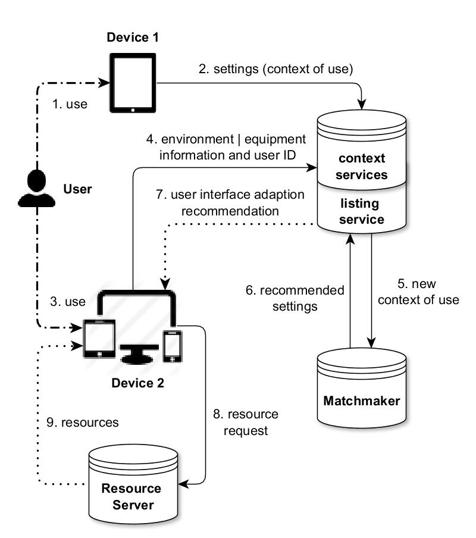

For Users
The openAPE workflow model
- A user personalizes a device according to his needs (e.g., font size, language etc.).
- The device creates different context objects that contain the relevant user settings and for which context they were made. These contexts are uploaded to the corresponding context web services.
- In a next step, the user can approach any other device connected to the openAPE infrastructure and can authenticate himself.
- After the authentication, this second device uploads the current context conditions (equipment, environment and task context).
- In a next step, it sends a request message to the listing service in order to obtain information about optimized UI settings and additional UI resources. Thereby it refers to the uploaded context information.
- The listing service starts a matchmaking mechanism to infer the recommended UI settings and adaptations.
- The listing service exposes the recommended settings to the client.
- The client downloads the recommendations and adjusts its UI.
- If mentioned in the recommendations, the device can download additional UI resources.
- Optionally, the client gives feedback on the quality of the recommended settings to openAPE.
